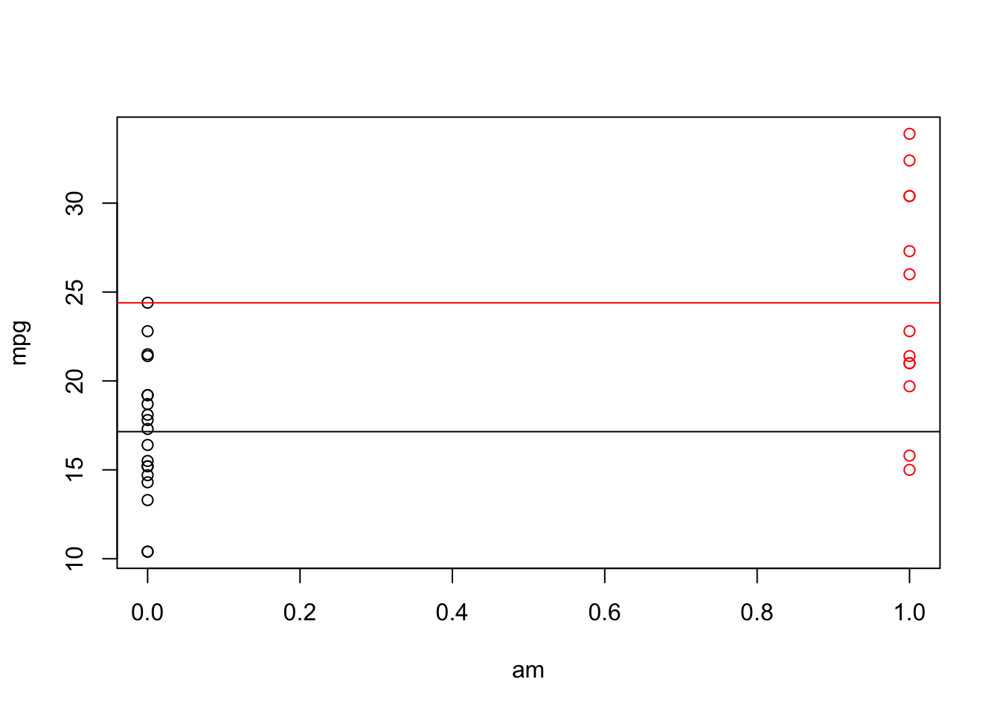
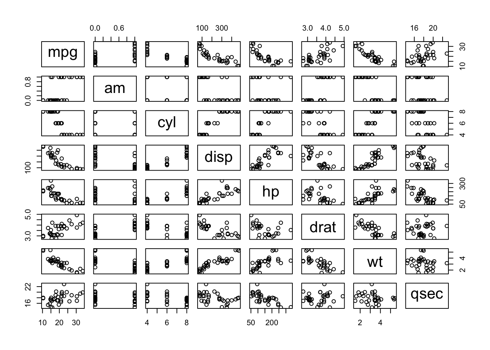
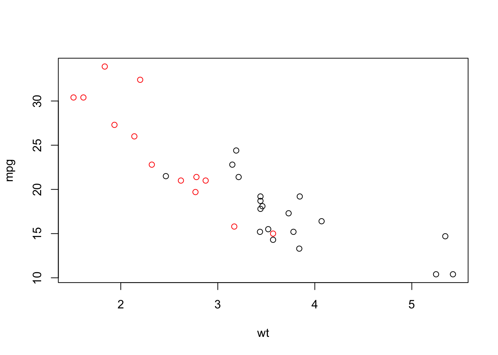
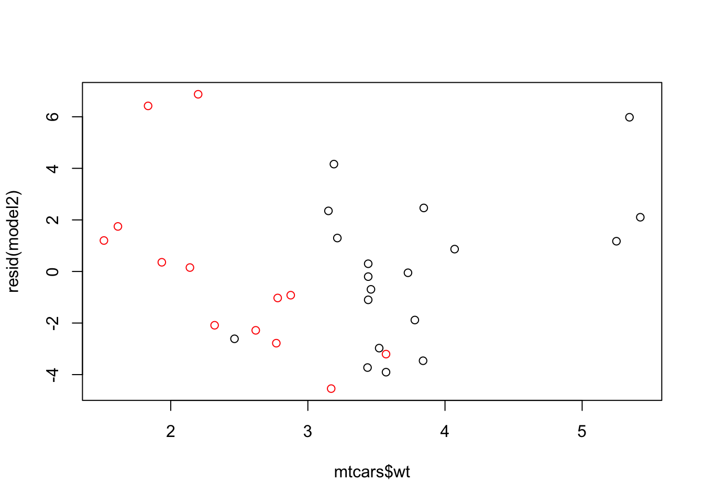

It is not possible to quantify the MPG difference between automatic and manual transmissions in a given data set. There is no evidence in data to substantiate the claim that any kind of transmission is better for MPG. The superficial relation between MPG and transmission type can be entirely explained by the weight of an engine.
However there is a correlation between weight of an engine and a transmission type. Probably, the engines with automatic transmission are heavier (or maybe data set is skewed).
At a first glance on a data we can see that the average MPG for the automatic transmission (black) is lower than form manual transmission (red). Is that enough to draw a conclusion? No. Let’s take a look on other columns.

We can see that there is high correlation between MPG and other columns - weight, number of cylinders, displacement etc. So, the correlation between the transmission mode can be explained by other data.

Further more there is correlation between weight and type of transmission. The heavier engines in data set have also automatic transmission. Maybe there is casual relation or maybe the data set is skewed? It is hard to determine.

First, I tried to use all available fields to explain MPG. The results are explained in Appendix 1. The most significant results were for weight. Still, the p value was above 0.05. I decided to try the model solely based on this param.
##
## Call:
## lm(formula = mpg ~ wt, data = mtcars)
##
## Residuals:
## Min 1Q Median 3Q Max
## -4.5432 -2.3647 -0.1252 1.4096 6.8727
##
## Coefficients:
## Estimate Std. Error t value Pr(>|t|)
## (Intercept) 37.2851 1.8776 19.858 < 2e-16 ***
## wt -5.3445 0.5591 -9.559 1.29e-10 ***
## ---
## Signif. codes: 0 '***' 0.001 '**' 0.01 '*' 0.05 '.' 0.1 ' ' 1
##
## Residual standard error: 3.046 on 30 degrees of freedom
## Multiple R-squared: 0.7528, Adjusted R-squared: 0.7446
## F-statistic: 91.38 on 1 and 30 DF, p-value: 1.294e-10And perform the residual analysis - the aforementioned correlation between weight and transmission type is still visible.

At last, I performed the analysis of model based on weight and transmission type:
##
## Call:
## lm(formula = mpg ~ wt + am, data = mtcars)
##
## Residuals:
## Min 1Q Median 3Q Max
## -4.5295 -2.3619 -0.1317 1.4025 6.8782
##
## Coefficients:
## Estimate Std. Error t value Pr(>|t|)
## (Intercept) 37.32155 3.05464 12.218 5.84e-13 ***
## wt -5.35281 0.78824 -6.791 1.87e-07 ***
## am -0.02362 1.54565 -0.015 0.988
## ---
## Signif. codes: 0 '***' 0.001 '**' 0.01 '*' 0.05 '.' 0.1 ' ' 1
##
## Residual standard error: 3.098 on 29 degrees of freedom
## Multiple R-squared: 0.7528, Adjusted R-squared: 0.7358
## F-statistic: 44.17 on 2 and 29 DF, p-value: 1.579e-09There significance level for the relation between weight and transmission type is very low (p = 0.988). There is no way to draw a conclusion about the relation from the data. The relation between MPG and transmission type can be solely explained by weight (with high significance level p < 1.87e-07). The drop of MPG per 1 thousand lb is 5.35281 with standard error 0.78824.
##
## Call:
## lm(formula = mpg ~ ., data = mtcars)
##
## Residuals:
## Min 1Q Median 3Q Max
## -3.4506 -1.6044 -0.1196 1.2193 4.6271
##
## Coefficients:
## Estimate Std. Error t value Pr(>|t|)
## (Intercept) 12.30337 18.71788 0.657 0.5181
## cyl -0.11144 1.04502 -0.107 0.9161
## disp 0.01334 0.01786 0.747 0.4635
## hp -0.02148 0.02177 -0.987 0.3350
## drat 0.78711 1.63537 0.481 0.6353
## wt -3.71530 1.89441 -1.961 0.0633 .
## qsec 0.82104 0.73084 1.123 0.2739
## vs 0.31776 2.10451 0.151 0.8814
## am 2.52023 2.05665 1.225 0.2340
## gear 0.65541 1.49326 0.439 0.6652
## carb -0.19942 0.82875 -0.241 0.8122
## ---
## Signif. codes: 0 '***' 0.001 '**' 0.01 '*' 0.05 '.' 0.1 ' ' 1
##
## Residual standard error: 2.65 on 21 degrees of freedom
## Multiple R-squared: 0.869, Adjusted R-squared: 0.8066
## F-statistic: 13.93 on 10 and 21 DF, p-value: 3.793e-07